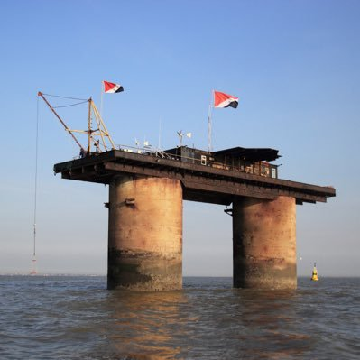

A Journey to Sealand: From Hope to Disappointment

On a crisp morning, I set out from the shores of the mainland, rowing tirelessly towards the distant silhouette of Sealand. The journey was arduous, with each stroke of the oar bringing me closer to my destination. As I approached the metal platform rising from the sea, I was filled with a sense of awe at the sight of this self-proclaimed micronation.
Stepping onto Sealand, I was greeted by the vast expanse of the sea and the solitude of the platform. I had envisioned a bustling community, but instead found only the remnants of an abandoned outpost. The reality of Sealand was far from the grandeur I had imagined - a stark reminder of the fragility of human ambition.
Despite the disappointment, my journey to Sealand was not in vain. It was a reminder of the unpredictability of travel and the importance of embracing the journey, no matter the destination. As I rowed back to the mainland, I reflected on the experience, grateful for the adventure and the lessons learned along the way.